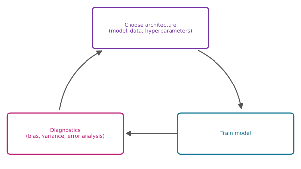
Machine Learning Development Process
machine-learning
neural-networks
The iterative loop of machine learning development, illustrated by building an email spam classifier. Choose an architecture, train, run diagnostics such as error analysis, and pick the most promising idea to try next.
The previous pages built up a toolbox of diagnostics, from evaluating a model with training, cross-validation, and test sets to diagnosing bias and variance. This page zooms out and asks where those tools fit in the overall process of developing a machine learning system, so that when you build one yourself, you are in a position to make good decisions at each stage.
The Iterative Loop of Machine Learning Development
Developing a machine learning model usually feels like going around a loop.
- Choose the architecture. Decide on the overall shape of the system, which means choosing the machine learning model, the data to train on, and perhaps the hyperparameters, such as the regularization parameter \(\lambda\) or the size of a neural network.
- Train the model. Given those decisions, implement and train it. When you train a model for the first time, it will almost never work as well as you want it to.
- Run diagnostics. Look at the bias and variance of the algorithm, and at error analysis, a second key diagnostic described later on this page.
Based on the insights from the diagnostics, you make decisions. Should the neural network be bigger? Should \(\lambda\) change? Should you add more data, add more features, or subtract features? Then you go around the loop again with the new choice of architecture. It often takes multiple trips around this loop to reach the performance you want.
Review Questions
1. Put these three stages of the iterative loop in order. (a) run diagnostics, (b) choose the architecture, (c) train the model.
TipAnswer
- choose the architecture (model, data, hyperparameters), then (c) train the model, then (a) run diagnostics such as bias/variance and error analysis. The insights from the diagnostics feed a new choice of architecture, and the loop repeats.
1. Why is it called a loop rather than a checklist you complete once?
TipAnswer
Because the first trained model almost never performs as well as you want. The diagnostics tell you what to change, you change it, and you train again. Reaching good performance usually takes several iterations of choosing, training, and diagnosing.
Example: Building an Email Spam Classifier
To make the loop concrete, consider email spam, a problem many people passionately care about. Here is what a highly spammy email might look like next to a genuine one.
| Spam | Non-spam |
|---|---|
| From: cheapsales@buystufffromme.com To: Andrew Ng Subject: Buy now! Deal of the week! Buy now! Rolex w4tchs - $100 Med1cine (any kind) - 50% off Fast Viagra delivery to your door Also low cost M0rgages available. |
From: Alfred Ng To: Andrew Ng Subject: Christmas dates? Hey Andrew, Was talking to Mom about plans for Xmas. When do you get off work? Meet Dec. 22? Alf |
Notice how the spammer deliberately misspells words, w4tchs, med1cine, m0rgages, to try to trip up a spam recognizer. The email on the right, by contrast, is an actual note about getting together for Christmas.
How do you build a classifier to recognize spam versus non-spam? One way is to train a supervised learning algorithm where the input features \(x\) are features of the email and the output label \(y\) is \(1\) or \(0\) depending on whether it is spam. Because the input is a text document, an email, being sorted into categories, this application is an example of text classification.
Constructing the Features
One way to construct features is to take the top 10,000 words in the English language (or some other dictionary) and use them to define features \(x_1, x_2, \dots, x_{10000}\). For a given email, set each feature to \(1\) or \(0\) depending on whether that word appears. Here is that idea on a toy scale, with a small word list and the non-spam email above.
import re
email = """Hey Andrew, Was talking to Mom about plans for Xmas.
When do you get off work? Meet Dec. 22? Alf"""
vocabulary = ["a", "andrew", "buy", "deal", "discount", "meet", "mom", "work"]
words_in_email = set(re.findall(r"[a-z0-9]+", email.lower()))
x = [1 if word in words_in_email else 0 for word in vocabulary]
for word, xi in zip(vocabulary, x):
print(f" {word:<10} {xi}") a 0
andrew 1
buy 0
deal 0
discount 0
meet 1
mom 1
work 1The word a does not appear (as a standalone word), Andrew does, buy and deal do not, and so on. Scaling the vocabulary up to 10,000 words turns each email into a vector of 10,000 features.
There are many ways to construct a feature vector. Another choice is to let each number be not just \(1\) or \(0\) but the count of how many times the word appears; if buy appears twice, \(x_3 = 2\) instead of \(1\). The simple \(0/1\) version already works decently well, though.
Given these features, you can train a classification algorithm, such as a logistic regression model or a neural network, to predict \(y\) given the features \(x\).
Review Questions
1. In the spam classifier setup, what are \(x\) and \(y\), and what general type of problem is this?
TipAnswer
\(x\) is a feature vector describing the email, for example 10,000 binary features marking which dictionary words appear, and \(y\) is \(1\) for spam and \(0\) for non-spam. It is a supervised learning problem, specifically text classification.
1. Describe two different ways to set the value of the feature for the word “buy.”
TipAnswer
As a binary indicator, \(1\) if “buy” appears anywhere in the email and \(0\) otherwise, or as a count, the number of times “buy” appears (so an email that says it twice gets \(2\)). Both are reasonable; the binary version already works decently well.
1. Why do spammers write “w4tchs” instead of “watches”?
TipAnswer
It is a deliberate misspelling designed to slip past a spam recognizer. A classifier whose features are dictionary words will not have “w4tchs” in its vocabulary, so the spammy word never triggers the corresponding feature.
Many Ideas, Limited Time
After you train the initial model, if it does not work as well as you wish, you will quite likely have multiple ideas for improving it.
- Collect more data. It is always tempting. One real example is a honeypot project, which creates a large number of fake email addresses and deliberately tries to get them into the hands of spammers. Any email sent to those addresses is known to be spam, which yields a lot of labeled spam data.
- Develop features based on email routing. Emails carry header information tracing the sequence of servers, sometimes around the world, the message traveled through to reach you. The path an email took can help reveal whether it was sent by a spammer.
- Design better features from the email body. For instance, should discounting and discount be treated as the same word or different words?
- Detect deliberate misspellings. Algorithms that catch w4tchs, med1cine, and m0rgages could help flag spammy emails that dodge the word-list features.
Given all of these ideas, and possibly more, how do you decide which is the most promising to work on? Choosing the more promising path can easily speed up a project ten times compared with heading down a less promising direction.
This is exactly where the diagnostics earn their keep. Learning curves showed that if an algorithm has high bias, more data does not help much, so spending months on a honeypot project would not be the most fruitful direction. But if the algorithm has high variance, then collecting more data could help a lot. One bias/variance measurement can save a team months of work aimed at the wrong problem.
Going around the iterative loop, you may have many ideas for modifying the model or the data, and coming up with the right diagnostics can give a lot of guidance on which choices are the most promising to try. Bias and variance is the first key set of ideas; the second is the error analysis process, covered next, another way of gaining insight into which architecture changes are worth pursuing.
Review Questions
1. Your spam classifier has high bias, with \(J_{train}\) far above the baseline. A teammate proposes a six-month honeypot project to gather much more spam data. What do you tell them?
TipAnswer
Hold off. High bias means the model does not even fit the data it already has, and learning curves show that adding more data barely moves a high-bias model. The team should first make the model more powerful (better features, a bigger model, a smaller \(\lambda\)); the honeypot project becomes attractive only if the diagnosis is high variance instead.
1. Why can choosing the right idea to work on speed a project up by ten times?
TipAnswer
Each idea, more data, new routing features, misspelling detection, can take weeks or months to execute. If the chosen idea does not address the actual problem (for example, gathering data for a high-bias model), all that time is spent for little gain. Diagnostics such as bias/variance and error analysis point at the ideas most likely to pay off, so effort goes where it matters.
1. Which of these is a diagnostic you run in the third stage of the iterative loop? (Two of these are correct.)
Bias and variance
Picking the hyperparameters
Error analysis
Training the model
TipAnswer
a and c. Bias/variance and error analysis are the diagnostics that generate insight after training. Picking hyperparameters (b) belongs to the architecture-choice stage, and training the model (d) is its own stage of the loop.
Error Analysis
Of the ways to run diagnostics and choose what to try next, bias and variance is probably the most important idea, and error analysis is probably second.
Concretely, say the spam classifier has \(m_{cv} = 500\) cross-validation examples, and the algorithm misclassifies 100 of them. Error analysis just refers to manually looking through those 100 examples and trying to gain insight into where the algorithm is going wrong. Specifically, find the set of misclassified cross-validation examples and try to group them by common themes, common properties, or common traits.
Say quite a lot of the misclassified spam emails turn out to be pharmaceutical sales, trying to sell medicines or drugs. Go through the misclassified examples and count them up by hand. Do the same for any other suspected themes, such as deliberate misspellings, unusual email routing, phishing emails trying to steal passwords, and embedded image spam, where the spammer writes the message inside an image that appears in the email instead of in the email body, making it harder for a learning algorithm to figure out what is going on.
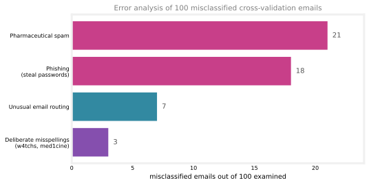
These counts tell you that pharmaceutical spam (21) and phishing emails (18) are huge problems, whereas deliberate misspellings (3), while a real problem, is a much smaller one. In particular, even if you built a really sophisticated algorithm to find deliberate misspellings, it would only solve 3 out of 100 misclassified examples. The net impact seems like it may not be that large. That does not mean it is not worth doing, but when you are prioritizing, you might decide not to rank it as highly.
Andrew Ng tells on himself here. He once actually spent a lot of time building algorithms to find deliberate misspellings in spam emails, only to realize much later that the net impact was quite small. It is one example where more careful error analysis before investing the effort would have redirected months of work.
Two practical notes on the process:
- The categories can overlap. They are not mutually exclusive. A pharmaceutical spam email can also have unusual routing, and an email with deliberate misspellings can also be carrying out a phishing attack. One email can be counted in multiple categories.
- Sample if there are too many to read. With 500 cross-validation examples and 100 errors, you can look at all of them. But with, say, 5,000 cross-validation examples and 1,000 misclassified, you may not have the time. In that case, randomly sample a subset of around 100, maybe a couple hundred, the amount you can look through in a reasonable time. Around 100 examples usually gives enough statistics on the most common error types, and therefore on where it is most fruitful to focus attention.
From Counts to Concrete Ideas
Finding that a lot of errors are pharmaceutical spam creates inspiration for what to try next, and the ideas it suggests are pleasingly specific:
- Collect more data, but not more data of everything. Find more examples of pharmaceutical spam specifically, so the algorithm gets better at recognizing it.
- Design new features related to specific names of drugs or pharmaceutical products the spammers are trying to sell.
- For phishing, look at the URLs in the email and write code for extra features that flag suspicious links, or gather more phishing emails specifically.
The point of error analysis is that manually examining a set of misclassified examples often creates inspiration for what might be useful to try next, and sometimes tells you the opposite, that certain types of errors are sufficiently rare that they are not worth much of your time to fix.
Return to the list of ideas from earlier. A bias/variance analysis tells you whether collecting more data helps at all, and this error analysis tells you which refinements pay off. More sophisticated email features in general could help a bit; features aimed at pharmaceutical spam or phishing could help a lot; detecting misspellings would not help nearly as much. Together, the two diagnostics screen which changes to the model are the most promising to try.
A Limitation
One limitation of error analysis is that it is much easier for problems that humans are good at. You can look at an email, know it is spam, and reason about why the algorithm got it wrong. It is harder for tasks even humans cannot do well, such as predicting which ads someone will click on a website; a person cannot look at one example and say what the right answer should have been, so diagnosing individual mistakes gives less insight. But for the problems where it applies, error analysis can be extremely helpful for focusing attention on the more promising things to try, which can easily save months of otherwise fruitless work.
One of the outcomes error analysis (or a bias/variance diagnosis) frequently points at is get more data, of some targeted kind. The next section looks at techniques that make adding data much more efficient.
Review Questions
1. In one sentence, what is error analysis?
TipAnswer
Manually examining the examples the algorithm misclassified, usually from the cross-validation set, and grouping them into common themes to see which kinds of errors are frequent and which are rare.
1. In the example, a sophisticated misspelling detector would be an impressive piece of engineering. Why did error analysis argue against prioritizing it?
TipAnswer
Only 3 of the 100 misclassified emails involved deliberate misspellings, so even a perfect detector would fix at most 3 percent of the errors. Pharmaceutical spam (21) and phishing (18) each account for far more mistakes, so effort spent there has a much bigger net impact.
1. Can one misclassified email be counted in more than one category?
TipAnswer
Yes. The categories are not mutually exclusive. A pharmaceutical spam email can also have unusual routing, and a phishing email can also contain deliberate misspellings, so one email may add to several counts.
1. Your algorithm misclassifies 1,000 of 5,000 cross-validation examples. You manually examine 100 of them, chosen at random, and find that 21 are pharmaceutical spam. What is a reasonable estimate of how many of the 1,000 misclassified emails are pharmaceutical spam, and why is examining only 100 acceptable?
TipAnswer
About 210, since the 100 were sampled at random, roughly 21 percent of all 1,000 errors should be pharmaceutical spam. Examining around 100 examples is acceptable because it is what fits in a reasonable amount of time, and it already gives good enough statistics on which error types are most common.
1. Why is error analysis harder for a task like predicting which ads a user will click on?
TipAnswer
Error analysis relies on a human looking at a misclassified example and understanding what the right answer is and why the algorithm plausibly got it wrong. Humans are good at judging whether an email is spam, but even humans cannot predict what a particular person will click, so inspecting individual mistakes yields much less insight.
1. Which of these is a way to do error analysis?
Calculating the training error \(J_{train}\)
Collecting additional training data in order to help the algorithm do better
Manually examine a sample of the training examples that the model misclassified in order to identify common traits and trends
Calculating the test error \(J_{test}\)
TipAnswer
c. Error analysis is the manual inspection of misclassified examples, usually from the cross-validation set, to find common traits and trends. Calculating \(J_{train}\) or \(J_{test}\) (a, d) is part of bias/variance diagnosis, not error analysis, and collecting more data (b) is an action error analysis might suggest, not the analysis itself.
Adding Data
When training machine learning algorithms, it feels like you always wish you had more data. This section collects tips for adding data, collecting more data, or sometimes even creating more data. A fair warning first. This and the following sections are a bit of a grab bag of techniques, and that is because machine learning is applied to so many different problems. For some, humans are great at creating labels; for some you can get more data easily, and for some you cannot. Not every technique applies to every application, but many of them are useful across a wide range of them.
Add Targeted Data, Not More of Everything
It is tempting to say “let’s just get more data of everything.” But collecting more data of all types can be slow and expensive. An alternative is to focus on adding more data of the types where analysis has indicated it would help. If error analysis revealed that pharmaceutical spam is a large problem, a more targeted effort, getting more examples of pharma spam specifically rather than everything under the sun, can add just the emails you need at a much more modest cost.
One practical way to do that starts with data you already have. If a pile of unlabeled email data is sitting around that no one has labeled as spam or non-spam yet, you can ask labelers to quickly skim it and pull out more examples specifically of pharma-related spam. This can boost performance much more than adding more emails of all sorts.
The general pattern goes like this. If you have ways to add more data of everything, that is fine, nothing wrong with it. But if error analysis has indicated that there are certain subsets of the data the algorithm does particularly poorly on, then getting more data of just those types, more pharmaceutical spam, more phishing emails, or whatever the analysis flagged, can be a more efficient way to add a little data yet boost performance by a lot.
Data Augmentation
Beyond getting your hands on brand-new training examples \((x, y)\), there is a technique called data augmentation, widely used especially for images and audio, that can increase the training set size significantly. The idea is to take an existing training example and apply a distortion or transformation to the input \(x\) to create a new training example with the same label \(y\).
Suppose you are recognizing the letters A through Z for an OCR (optical character recognition) problem, not just the digits 0-9 but the letters too. Given one image of the letter A, you can create new training examples by rotating it a bit, enlarging it, shrinking it, or changing its contrast, all distortions that do not change the fact that it is still the letter A. For some letters, though not others, the mirror image works too, since a mirrored A still looks like an A.
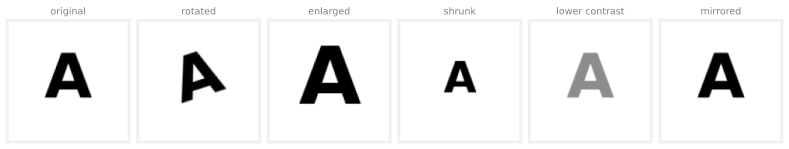
Creating additional examples like this tells the algorithm that the letter A rotated a bit, enlarged a bit, or shrunk a little is still the letter A, which helps it learn to recognize the letter more robustly. A more advanced version places a grid on top of the letter and introduces random warpings of that grid, turning one image into a much richer library of distorted-but-still-recognizable examples.
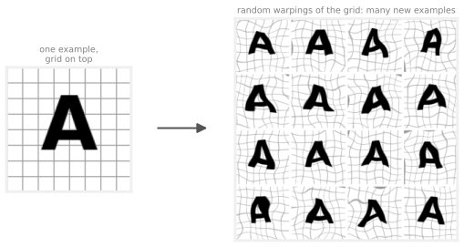
NoteConnection to linear algebra
If the grids in these pictures ring a bell, it is from Linear Transformations. Rotating, enlarging, shrinking, and mirroring the letter are all linear transformations of the image’s coordinates, each one is a matrix, and each keeps the grid lines straight, parallel, and evenly spaced. The random warping is exactly what a linear transformation cannot do. It bends the grid lines, which makes it a nonlinear transformation and is also why it produces a much richer variety of distorted letters than any single matrix could.
The same idea works for speech recognition. Take an original voice-search audio clip of someone saying “What is today’s weather?” and add noisy background audio to it. Mix in the sound of a crowd, and you have a clip of the same sentence spoken in a noisy crowd; mix in car noise, and it sounds like the speaker is in a car; process it to sound like a bad cell phone connection, and that is a fourth variant. One clip has become several training examples, all labeled with the same transcript.
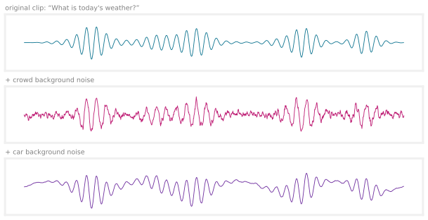
In Andrew Ng’s own work on speech recognition systems, this was a really critical technique for artificially increasing the size of the training data to build a more accurate recognizer.
WarningMake the distortions look like the test set
The changes or distortions you make to the data should be representative of the types of noise or distortions in the test set. A warped letter A still looks like letters you would want to recognize out in the world; audio with crowd noise or a bad cell phone connection is exactly what a voice-search system will hear. In contrast, adding purely random, meaningless noise, say, adding random noise to every pixel’s brightness \(x_i\), produces images that do not look like anything in the test set, and it usually does not help.
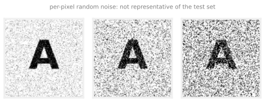
A good way to think about data augmentation is to ask how you can modify, warp, distort, or add noise to your data so that the result is still quite similar to what is in the test set. The test set is what the learning algorithm ultimately needs to do well on.
Data Synthesis
Whereas data augmentation modifies an existing training example to create another, data synthesis makes up brand-new examples from scratch.
Take photo OCR, the problem of looking at a photograph and having the computer automatically read the text that appears in the image. One key step is looking at a small image patch and recognizing the letter in the middle of it. Where do training examples for that come from? Real ones are cropped out of actual photographs. But you can also manufacture them. A computer’s text editor offers a lot of different fonts, the same seven letters can look wildly different, and each font is a free source of new letter shapes.
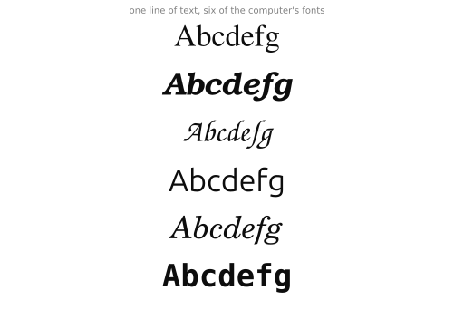
So type random text, screenshot it using different fonts, colors, and contrasts, and you get synthetic data that looks remarkably like the real patches cropped from photographs. The mosaic below is generated exactly that way, random short strings, random fonts, random foreground and background shades, plus a little blur and noise, and every patch is a brand-new manufactured training example that never existed in any photograph.
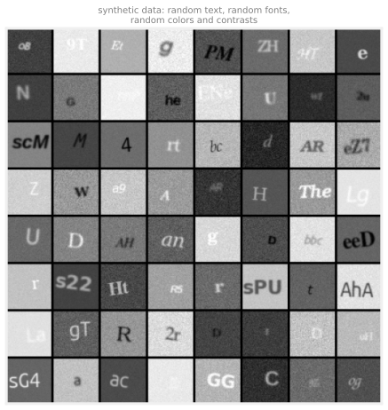
Writing the code to generate realistic-looking synthetic data for an application can be a lot of work. But when you spend the time to do so, it can sometimes generate a very large amount of data and give a huge boost to an algorithm’s performance. Synthetic data generation has been used mostly for computer vision tasks, and less for other applications, not that much for audio.
The Data-Centric Approach
All the techniques in this section are about engineering the data used by your system. That emphasis is newer than it might sound. A machine learning system includes both code, the algorithm or model, and data. For decades, most researchers followed a conventional model-centric approach. Download a dataset, hold the data fixed, and focus on improving the code, the algorithm, the model.
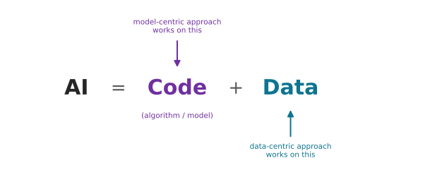
Thanks to that paradigm, today’s algorithms, linear regression, logistic regression, neural networks, and decision trees (covered in later pages), are already very good and work well for many applications. So it can sometimes be more fruitful to take a data-centric approach, holding the algorithm fixed and engineering the data instead, whether that means collecting more data of just pharmaceutical spam if that is what error analysis said, using augmentation to generate more images or audio, or using synthesis to create more training examples. Sometimes that focus on the data is the most efficient way to improve a learning algorithm’s performance.
There are also applications where you simply do not have much data and it is genuinely hard to get more. A technique called transfer learning, described next, can apply in that setting. It takes data from a totally different, barely related task and, with a neural network, sometimes uses it to get a big performance boost on your application. It does not apply to everything, but when it does, it can be very powerful.
Review Questions
1. Error analysis shows pharmaceutical spam is your biggest error category, and you have a large pile of unlabeled emails. What is the targeted way to add data here, and why is it better than “get more data of everything”?
TipAnswer
Have labelers quickly skim the unlabeled pile and pull out more examples of pharma-related spam specifically. Collecting more data of every type is slow and expensive, while adding just the type the algorithm is doing poorly on boosts performance on exactly the errors that matter, at a much more modest cost.
1. What is data augmentation, and why must the distortion leave the label unchanged?
TipAnswer
Data augmentation takes an existing training example \((x, y)\) and applies a distortion or transformation to the input \(x\), rotation, warping, background noise, to create a new example with the same label \(y\). The label must stay valid because the new example is fed to the algorithm as ground truth; a rotated A is still an A, which is exactly the lesson you want the algorithm to learn.
1. We sometimes take an existing training example and modify it (for example, by rotating an image slightly) to create a new example with the same label. What is this process called?
Machine learning diagnostic
Error analysis
Data augmentation
Bias/variance analysis
TipAnswer
c. That is the definition of data augmentation: take an existing example and distort its input, rotate, warp, add noise, while keeping the same label \(y\). Error analysis (b) and bias/variance analysis (d) are diagnostics that tell you what to try next, not techniques for creating new examples, and “machine learning diagnostic” (a) is the general category those two belong to.
1. Why does mirroring work as augmentation for the letter A but not for every letter?
TipAnswer
A mirrored A still looks like an A, so the label survives the transformation. Many letters are not symmetric that way, mirroring a b produces something that looks like a d, so the distorted image no longer matches its label and would teach the algorithm the wrong thing.
1. Which of these would likely be the least helpful augmentation for a photo OCR letter recognizer?
Rotating each letter image a few degrees
Adding random noise independently to every pixel
Warping the letters with a random grid distortion
Changing the contrast of the images
TipAnswer
b. The guiding principle is that distortions should be representative of what the test set looks like. Rotated, warped, and contrast-shifted letters all occur in real photographs, but images with pure per-pixel random noise do not, so that augmentation usually helps little.
1. What is the difference between data augmentation and data synthesis?
TipAnswer
Augmentation modifies an existing training example to create another, like mixing car noise into a real audio clip. Synthesis creates brand-new examples from scratch, like typing random text in many fonts and screenshotting it to manufacture photo OCR training images with no real photograph involved.
1. In your own words, contrast the model-centric and data-centric approaches. Why has the data-centric approach become more attractive?
TipAnswer
The model-centric approach holds the data fixed and works on improving the algorithm or code; the data-centric approach holds the algorithm fixed and works on engineering the data, targeted collection, augmentation, or synthesis. Decades of model-centric research have made today’s algorithms (linear and logistic regression, neural networks, decision trees) very good for many applications, so the bigger remaining gains often come from improving the data they are trained on.
Transfer Learning
For an application where you do not have much data, and it is hard to get more, transfer learning is a wonderful technique that lets you use data from a different task to help on your application. It is one of the techniques Andrew Ng says he uses very frequently.
How It Works
Say you want to recognize the handwritten digits 0 through 9, but you do not have much labeled data of handwritten digits. Here is what you can do. Find a very large dataset, say one million images of cats, dogs, cars, people, and so on, a thousand classes, and train a neural network on it to take an image \(x\) as input and learn to recognize any of the 1,000 classes. Training produces parameters for every layer, \(\mathbf{W}^{[1]}, \vec{b}^{[1]}\) for the first layer, \(\mathbf{W}^{[2]}, \vec{b}^{[2]}\) for the second, and so on up to \(\mathbf{W}^{[5]}, \vec{b}^{[5]}\) for the output layer.
To apply transfer learning, make a copy of this network, keeping the parameters of every layer except the last, and replace the output layer with a much smaller one that has 10 output units instead of 1,000, one per digit. The output layer’s parameters \(\mathbf{W}^{[5]}, \vec{b}^{[5]}\) cannot be copied over, because the dimensions of that layer have changed, so the new \(\mathbf{W}^{[5]}, \vec{b}^{[5]}\) are trained from scratch.
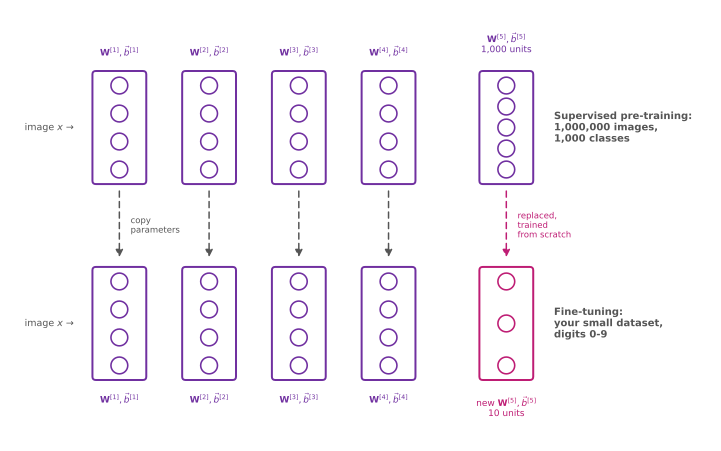
Use the copied parameters, all the layers except the final output layer, as a starting point, and run an optimization algorithm such as gradient descent or Adam from there. There are two options for which parameters to train:
- Option 1 trains only the output layer. Hold \(\mathbf{W}^{[1]}, \vec{b}^{[1]}\) through \(\mathbf{W}^{[4]}, \vec{b}^{[4]}\) fixed, do not change them at all, and update only \(\mathbf{W}^{[5]}, \vec{b}^{[5]}\) to lower the usual cost function on the small digit training set.
- Option 2 trains all the parameters, including every hidden layer, but with the first four layers initialized to the pre-trained values rather than random ones.
With a very small training set, Option 1 may work a little better; with a somewhat larger one, Option 2 may work a little better.
The first step, training on a very large dataset for a not-quite-related task, is called supervised pre-training. The second step, taking those parameters and running gradient descent further so the weights suit your specific application, is called fine-tuning. The intuition behind the name transfer learning is that by learning to recognize cats, dogs, cows, and people, the network has hopefully learned a plausible set of parameters for the earlier layers of image processing, and transferring those parameters means the new network starts off in a much better place, so just a little further learning can end at a pretty good model. Even with only tens, hundreds, or thousands of handwritten digit images, learning from a million images of a barely related task can help performance a lot.
You Usually Do Not Pre-Train Yourself
A nice thing about transfer learning is that you often do not need to carry out the pre-training step at all. For many architectures, researchers have already trained a neural network on a large dataset and posted the trained parameters on the internet, freely licensed for anyone to download and use. Rather than spending weeks training on a million images yourself, download someone else’s pre-trained network, replace the output layer with your own, and carry out Option 1 or Option 2 to fine-tune it. It is one of the ways the machine learning community’s open sharing of ideas, code, and parameters lets everyone get much better results than any single person could alone.
Why Does It Even Work?
How can parameters obtained by recognizing cats, dogs, cars, and people help recognize something as different as handwritten digits? Here is the intuition. In a network trained to detect objects in images, the first layer often ends up learning to detect edges, quite low-level features that group nearby pixels. The next layer learns to group edges together to detect corners and simple corner-like shapes. A layer after that may detect more complex, but still generic, basic curves and small shapes. Edges, corners, curves, and basic shapes are useful for many computer vision tasks, digits included, so those early layers transfer, and only the task-specific final layer has to be learned mostly from your data.
WarningThe input type has to match
One restriction of pre-training is that the input type \(x\) must be the same for the pre-training and fine-tuning steps. For a computer vision task, pre-train on images of the desired dimensions. A network pre-trained on images will probably not do much good on audio; a speech system needs a network pre-trained on audio data, and a text application needs one pre-trained on text.
The Recipe
To summarize, transfer learning has two steps:
- Download (or, less commonly, train yourself) a neural network with parameters pre-trained on a large dataset with the same input type as your application, images, audio, text, or something else.
- Fine-tune the network further on your own data.
With a network pre-trained on, say, a million images, a much smaller dataset, a thousand images, sometimes even fewer, can be enough to fine-tune to good results. Andrew Ng reports having trained networks that worked quite well on as few as 50 images this way. It is not a panacea, not every application works from 50 examples, but it helps a lot when your dataset is not that large.
If you have heard of GPT-3, BERT, or neural networks pre-trained on ImageNet, those are all successful examples of this idea. Someone pre-trained a neural network on a very large image or text dataset, so it can then be fine-tuned for other applications. (If you have not heard of them, do not worry about it.) So far the diagnostics and data techniques have looked at individual pieces of a system; the next section steps back to the full cycle of a machine learning project, all the steps worth thinking about when building one.
Review Questions
1. In the digit-recognition example, why can \(\mathbf{W}^{[1]}, \vec{b}^{[1]}\) through \(\mathbf{W}^{[4]}, \vec{b}^{[4]}\) be copied from the pre-trained network but \(\mathbf{W}^{[5]}, \vec{b}^{[5]}\) cannot?
TipAnswer
The first four layers keep the same shape in the new network, so their parameters carry over directly. The output layer changes from 1,000 units to 10, so its parameter dimensions no longer match; the new \(\mathbf{W}^{[5]}, \vec{b}^{[5]}\) must be trained from scratch.
1. What are the two options for fine-tuning, and which tends to suit a very small training set?
TipAnswer
Option 1 trains only the output layer’s parameters, holding all the copied layers fixed; Option 2 trains all the parameters, with the earlier layers initialized to the pre-trained values. With a very small training set, Option 1 may work a little better; with a somewhat larger set, Option 2 may.
1. Match the terms supervised pre-training and fine-tuning to the two steps of transfer learning.
TipAnswer
Supervised pre-training is the first step, training the network on a very large dataset for a not-quite-related task (the million images, 1,000 classes). Fine-tuning is the second, taking those parameters as the starting point and running gradient descent further on your own smaller dataset so the weights suit your specific application.
1. Intuitively, why do parameters learned on cats, dogs, cars, and people transfer to handwritten digits?
TipAnswer
The early layers of an image network learn generic features, edges in the first layer, corners in the next, then basic curves and small shapes. Those low-level features are useful for nearly any image task, including digits, so the early layers give the new network a strong head start, leaving mostly the task-specific output layer to learn.
1. You are building a speech recognition system and find these freely downloadable pre-trained networks. Which is the right starting point?
A network pre-trained on one million ImageNet photographs
A network pre-trained on a large dataset of audio clips
A network pre-trained on a large text corpus
Any of them, since transfer learning works across tasks
TipAnswer
b. Transfer learning does cross tasks, but the input type \(x\) must match, so audio applications need a network pre-trained on audio. An image- or text-pre-trained network (a, c) would probably not do much good, and (d) overstates how far the transfer goes.
1. What are two possible ways to perform transfer learning? (Two of these are correct.)
Given a dataset, pre-train and then further fine tune a neural network on the same dataset
Download a pre-trained model and use it for prediction without modifying or re-training it
You can choose to train just the output layers’ parameters and leave the other parameters of the model fixed
You can choose to train all parameters of the model, including the output layers, as well as the earlier layers
TipAnswer
c and d. These are Option 1 and Option 2 for fine-tuning: train only the new output layer with the rest held fixed, or train every layer starting from the pre-trained values. (a) is not transfer learning at all, since pre-training happens on a large, different dataset, not the same small one you fine-tune on, and (b) skips the fine-tuning step entirely, so the network never adapts to your task.
The Full Cycle of a Machine Learning Project
Training a model is just part of the puzzle. When building a valuable machine learning system, there is a bigger cycle of steps to think about and plan for. Speech recognition makes a good running example, since it is a project Andrew Ng has been through this cycle with.
- Scope the project. Decide what the project is and what you want to work on. One example is speech recognition for voice search, doing web searches by speaking to a mobile phone rather than typing.
- Collect data. Decide what data you need to train the system, then go do the work of getting it, for speech, the audio clips and the transcripts that serve as labels.
- Train the model. Train a first system, carry out error analysis and bias/variance analysis, and iteratively improve. It is not at all uncommon for the analysis to send you back to collect more data, of everything, or just of a specific type. Working on speech, Andrew Ng once found his model doing particularly poorly when there was car noise in the background, and used data augmentation to get more speech data that sounds like it was recorded in a car. You go around this smaller loop, train, analyze, add data, until the model is good enough.
- Deploy in production. Make the system available for users to use, and then keep monitoring and maintaining it, so that if performance gets worse, you can bring it back up. Deployment sometimes reveals the model is not working as well as hoped, sending you back to training or even to data collection. And if users give permission, data flowing through the production system can itself become more training data for improving the system.
The scoping, data, and training stages have filled this page and the previous ones; deployment is the piece that deserves a closer look.
What Deployment Looks Like
A common way to deploy a trained model is to implement it in a server, called an inference server, whose job is to call your trained model to make predictions. If your team has a mobile app, say a search application, then when a user talks to the app, the app makes an API call that passes the recorded audio clip to the inference server; the server applies the model and returns its prediction, in this case the text transcript of what was said.
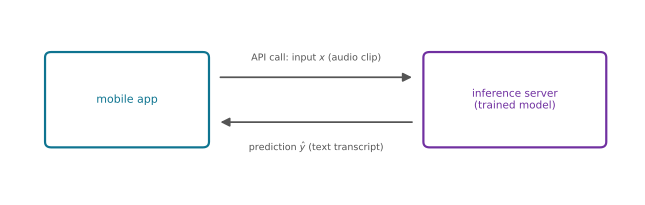
The general pattern is that an API call gives the learning algorithm its input \(x\), and the model returns a prediction \(\hat{y}\). Making that work takes software engineering, and how much depends on the scale. Serving a handful of users from a laptop needs very little; serving hundreds of millions of users takes significant data center resources. Depending on the scale, engineering effort goes into:
- ensuring reliable and efficient predictions, hopefully at not too high a computational cost;
- scaling to a large number of users;
- logging the data coming through, both the inputs \(x\) and the predictions \(\hat{y}\), assuming user privacy and consent allow storing it;
- system monitoring built on those logs; and
- model updates, retraining and replacing the old model with a new one when needed.
Why does a deployed model need maintenance at all? Because the world changes underneath it. Andrew Ng once built a speech recognition system on a certain dataset, and then new celebrities suddenly became well-known and elections put new politicians in office; people searched for names that were not in the training set, and the system did poorly on them. It was the monitoring that made it possible to figure out the data was shifting and the algorithm was becoming less accurate, which allowed retraining the model and carrying out a model update to replace the old model with the new one.
Depending on the team, you might build the machine learning model while a different team is responsible for deploying it. There is also a growing field called MLOps, Machine Learning Operations, the practice of how to systematically build, deploy, and maintain machine learning systems. That means making sure the model is reliable, scales well, has good logs, is monitored, and can be updated as appropriate to keep it running well, for instance with a highly optimized implementation so that serving millions of people is not too expensive.
Training a high-performing model, the focus of this course and the previous one, is absolutely the critical piece, but if you ever deploy a system to millions of people, these are the additional steps to plan for. One more set of ideas rounds out the machine learning development process, the ethics of building machine learning systems, a crucial topic for many applications, covered next.
Review Questions
1. Name the four stages of the full cycle of a machine learning project, in order.
TipAnswer
Scope the project (decide what to work on), collect data, train the model (including error analysis and iterative improvement), and deploy in production (including monitoring and maintaining the system).
1. During training, Andrew Ng’s speech model did poorly on audio with car noise in the background. Which arrow of the cycle does his response illustrate?
TipAnswer
The loop back from training to data collection. Error analysis identified a specific weak spot (speech with car noise), and rather than collecting more data of everything, he used data augmentation to create more speech data that sounds like it was recorded in a car, targeted data for exactly the failure the analysis found.
1. Why can a deployed model that worked well at launch degrade over time, and what makes the degradation detectable?
TipAnswer
The data can shift after deployment. In the voice search example, new celebrities and newly elected politicians led people to search names that were not in the training set. Logging the inputs and predictions and monitoring the system is what reveals the algorithm becoming less accurate, which then triggers retraining and a model update.
1. In the deployment pattern, what does the inference server do, and how does the mobile app talk to it?
TipAnswer
The inference server hosts the trained model and calls it to make predictions. The app makes an API call passing the input \(x\) (the recorded audio clip); the server applies the model and returns the prediction \(\hat{y}\) (the text transcript).
1. Which of these best describes MLOps?
A technique for optimizing a model’s parameters faster than gradient descent
The practice of systematically building, deploying, and maintaining machine learning systems
A method for generating synthetic training data
The team that labels training data
TipAnswer
b. MLOps (Machine Learning Operations) is the practice concerned with everything around the model in production, from reliability and scaling to logging, monitoring, and model updates, so the system keeps running well after deployment.
Fairness, Bias, and Ethics
Machine learning algorithms today affect billions of people. If you are building a machine learning system that affects people, it is worth giving real thought to making sure the system is reasonably fair, reasonably free from bias, and that you are taking an ethical approach to your application.
When It Has Gone Wrong
Unfortunately, the history of machine learning includes a few systems, some widely publicized, that turned out to exhibit a completely unacceptable level of bias.
- A hiring tool was shown to discriminate against women. The company that built it stopped using it, but one wishes the system had never been rolled out in the first place.
- Face recognition systems have matched dark-skinned individuals to criminal mugshots much more often than lighter-skinned individuals. Clearly not acceptable, and as a community we should get better at simply not building and deploying systems with problems like this.
- Bank loan approval systems have discriminated against subgroups in a biased way.
- Learning algorithms can have the toxic effect of reinforcing negative stereotypes. Andrew Ng puts it personally. He has a daughter, and if she searches online for images of certain professions and sees no one who looks like her, he would hate for that to discourage her from those professions.
Beyond biased treatment of individuals, there are also outright adverse use cases of machine learning:
- Deepfakes made without consent or disclosure. A widely viewed video by BuzzFeed showed a deepfake of former US President Barack Obama, made with full transparency and disclosure; using the same technology to generate fake videos without consent and disclosure would be unethical.
- Social media spreading toxic or incendiary speech, because optimizing purely for user engagement has led algorithms to do so.
- Bots generating fake content, whether for commercial purposes, like fake product comments, or for political ones.
- Machine learning used by bad actors. Just as email has seen a long battle between spammers and the anti-spam community, the financial industry today sees a battle between people committing fraud and people fighting fraud, and unfortunately machine learning is used on both sides.
So, for goodness’ sake, do not build a machine learning system that has a negative impact on society. And if you are ever asked to work on an application you consider unethical, walk away. Andrew Ng has more than once looked at a project that was financially sound, it would have made money, and killed it purely on ethical grounds, because he felt it would make the world worse off.
Guidance, Not a Checklist
Ethics is a complicated and rich subject that humanity has studied for at least a few thousand years. When AI became widespread, Andrew Ng read multiple books on philosophy and ethics hoping, naively, as he tells it, to distill a checklist of five things to do to be ethical. He failed, and no one has managed to come up with a simple checklist that gives that level of concrete guidance. What there is instead is general guidance and suggestions for making your work more fair, less biased, and more ethical.
NoteSuggestions before and after deploying a system that could create harm
- Assemble a diverse team to brainstorm what might go wrong, with an emphasis on possible harm to vulnerable groups. Diversity here spans many dimensions, gender, ethnicity, culture, and more, and diverse teams are collectively better at surfacing problems, which raises the odds of recognizing and fixing them before rollout hurts some group.
- Search the literature for standards or guidelines in your industry or application area. In the financial industry, for example, standards are emerging for what it means for a loan approval system to be reasonably fair and free from bias; standards like these, still developing in different sectors, can inform your work.
- Audit the system against the identified dimensions of harm before deployment. In the full cycle of a project, this is a crucial line of defense that sits after training the model but before production. If the team brainstormed that the system might be biased against certain genders or ethnicities, measure its performance on those subgroups and make sure any problem is found and fixed prior to deployment.
- Develop a mitigation plan, and keep monitoring for harm after deployment. A simple mitigation plan is rolling back to an earlier system known to be reasonably fair. Self-driving car teams did this well. Before putting cars on the road, they had already developed mitigation plans for what to do if a car was involved in an accident, so they could execute immediately rather than scramble after the fact.
Of course, some projects carry weightier ethical implications than others. A neural network deciding how long to roast coffee beans is not in the same category as a system deciding which bank loans to approve, where bias can cause significant harm. But having worked on many machine learning systems, Andrew Ng’s message is that ethics, fairness, and bias are issues to take seriously, not something to brush off or take lightly. Collectively, people working in machine learning can keep getting better at debating these issues, spotting problems, and fixing them before they cause harm, because the systems we build can affect a lot of people.
That completes the machine learning development process, from the iterative loop and error analysis to techniques for adding data, transfer learning, the full project cycle, and the ethics of the systems you build. A later section covers one more practical tool for this toolbox, handling skewed datasets, where the ratio of positive to negative examples is very far from 50-50 and special techniques are needed.
Review Questions
1. Why does this section offer “guidance, not a checklist”?
TipAnswer
Ethics is a subject humanity has studied for thousands of years, and no one, including Andrew Ng, who read multiple philosophy and ethics books hoping to find one, has produced a simple checklist (“do these five things and you will be ethical”) that gives concrete guidance for every situation. What exists instead is general guidance, namely diverse-team brainstorming, industry standards, pre-deployment audits, and mitigation plans.
1. What are the four suggestions for making a potentially harmful system more fair, less biased, and more ethical?
TipAnswer
Assemble a diverse team to brainstorm possible harms, especially to vulnerable groups; search the literature for standards or guidelines in your industry; audit the system against the identified dimensions of harm before deployment; and develop a mitigation plan, continuing to monitor for harm after deployment so the plan can be triggered quickly.
1. Why does a more diverse team make a system less likely to cause harm?
TipAnswer
A team that is diverse across many dimensions, gender, ethnicity, culture, and more, is collectively better at brainstorming the things that might go wrong, including harms that would fall on groups a homogeneous team might not think about. That increases the odds a problem is recognized and fixed before the system is rolled out.
1. Where does the bias audit fit in the full cycle of a machine learning project, and why there?
TipAnswer
After training the model but before deploying it in production. That placement makes it a line of defense. Measuring performance on the subgroups the team flagged (certain genders, ethnicities, or others) catches bias while it can still be fixed, before the system affects real users.
1. What did self-driving car teams do that illustrates a good mitigation plan?
TipAnswer
Before rolling cars out on the road, they had already developed plans for what to do if a car was ever involved in an accident. When something went wrong, they could execute the plan immediately instead of scrambling after the fact, the essence of planning mitigation in advance and monitoring so it can be triggered quickly.